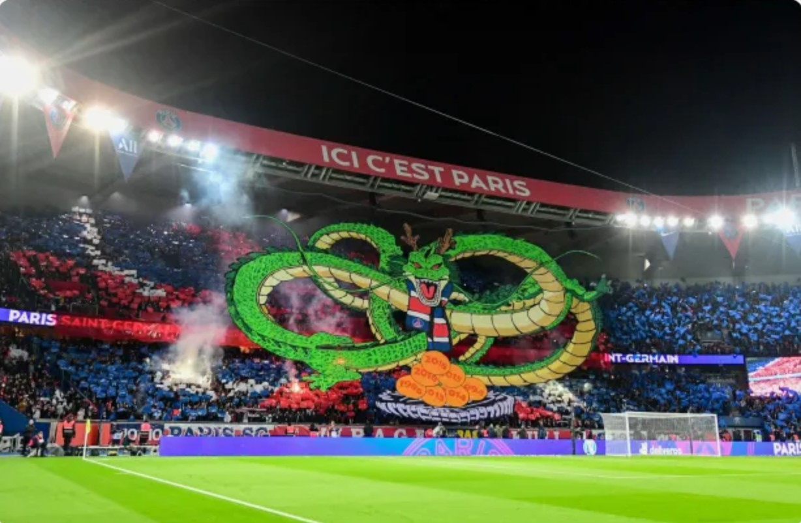

Nos Articles du moment

Introduction

Mbappé, le futur ballon ?
À tout juste 23 ans, Kylian pourrai devenir le futur Ballon d’Or, il est devenu le plus grand Espoir Français , ce serai une première depuis Zidane en 1998.

Hatem Ben Arfa, une carrière gâchée ?
Découvrez la carrière d’Hatem Ben Arfa, dans le meilleur comme dans le pire, depuis son arrivé au PSG, de héro à zéro...

Le Parc des Prince
L’un des Stades les plus emblématique de Ligue 1, grâce à cet article apprenez en plus sur ses origines et ses différentes histoires.
L'hymne de la Victoire des Bleus
Le nouvelle Hymne de la victoire de la Coupe du Monde 2018, c’est surêment la référence musicale pour cette belle victoire en représentant chacun de ces joueurs grandioses.

Les Yeux dans les Bleus
Ce Film documentaire va vous immergé dans la Coupe du Monde 1998, en nous insérant dans la vie des joueurs et dans cette compétition époustouflante.

Mbappé, Le Phénomène
À travers, ce livre découvrais la carrière de ce jeune français qui fait trembler le football international, depuis ses débuts, jusqu’à son arriver au sommet.